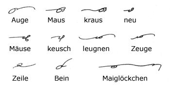
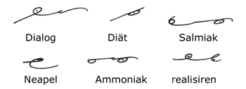
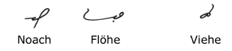
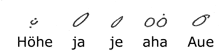
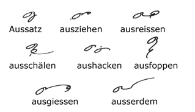
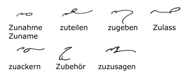
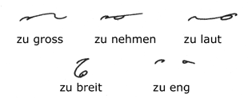
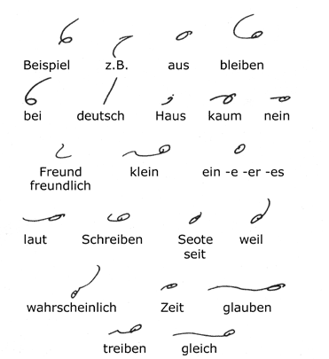

29.
A diphthong is the sound produced by the union in one syllable of
two simple vowel sounds uttered n rapid succession.

The diphthong AU is, of course, made
up from the sounds A and U in the words nahe
and Nuss, and it is therefore represented by the signs
for these two sounds.
The diphthong EU or AEU
most nearly approximates to the O in Not and the
I in Zinn. It is to be carefully noted that
in a few words the circle falls outside the hook, as in leugnen
and Zeuge given above.
The sign for the diphthong EI
or AI is the large A circle slightly indented;
the examples given above show clearly how it is written. The
position of the EI diphthong is determined by the rules
for the writing of the A circle.
30. The Diphthong IA

The sound IA or IAE is represented by the large
circle with a small dot inside it, and the sound EA by
the large circle with a small dash inside.

Consecutive vowels which do not form
a pure diphthong are joined in their natural order.
31. Non-Consonantal Words

There are a few words in which there
are no consonants. The H dot, or the marks distinguishing
the vowel sounds, should be used.
32. The Prefix AUS

The prefix AUS is represented
by the diphthong AU, joined when possible, but never joined
when followed by a vowel.
AUSSER is represented by
the sign for AUS followed by the stroke R.
33. The Prefix ZU

The prefix ZU is always
disconnected if followed by a vowel.
When it is followed by a consonant
it is written in full before F, K, N,
T and the corresponding long strokes, but it is abbreviated
to Z before all the other consonants.

The preceding rule applies to zu
as a separate words. If the succeeding word commences with
a vowel the two words are written apart, otherwise the words are
joined and Z or ZU is written as explained above.
34. Word-Signs

A further list of word-signs mainly
coming under the diphthong rules.
- Next Page -
|